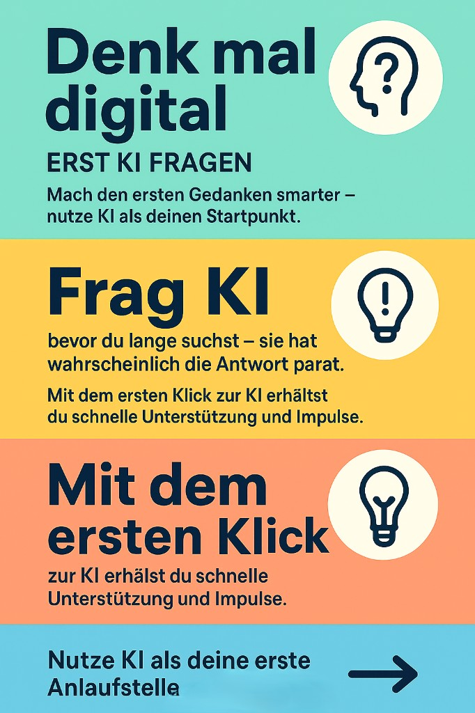
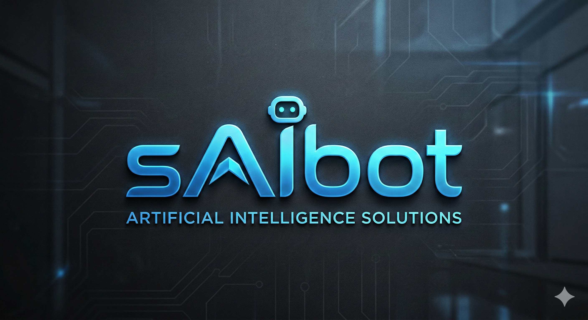
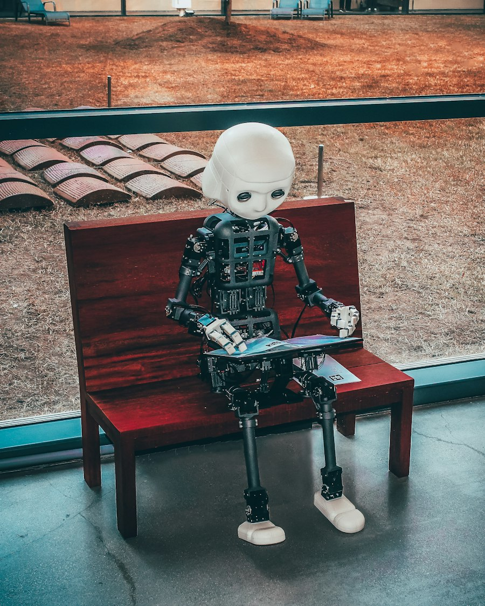

Gemeinsam statt solo
KI nutzen wir im Team — im Raum, nicht verstreut in Homeoffice-Schachteln. Ideen entstehen nebeneinander.
Artificial Intelligence Solutions für KMU
Ich mache KI verständlich, entwickle passgenaue Programme und begleite Sie — damit Digitalisierung Freiraum schafft, statt zu überfordern.
Meine Haltung
KI begeistert mich. Trotzdem: Kein Tool ersetzt ein Gespräch am Tisch, Kaffee in der Hand, Blick in die Augen. Digitalisierung ist für mich dann gut, wenn sie Freiraum schafft — für Kolleginnen, Kunden und das, was wirklich zählt.
KI nutzen wir im Team — im Raum, nicht verstreut in Homeoffice-Schachteln. Ideen entstehen nebeneinander.
Automatisierung dort, wo sie entlastet — nicht dort, wo sie Nähe ersetzt. Was persönlich bleiben soll, bleibt bewusst persönlich.
Weniger Routine am Bildschirm heißt: öfter anklopfen, anrufen, vorbeigehen — bei Mitarbeitenden wie bei Kunden.
„Technik ist das Werkzeug. Menschlichkeit ist der Grund, warum wir sie einsetzen.“
Haltung im Alltag
Ein Impuls für Teams und Unternehmen: KI nicht als Ersatz, sondern als erste Anlaufstelle im eigenen Denkprozess — bevor lange gesucht, geraten oder aufgeschoben wird.

Erst KI fragen.
Machen Sie den ersten Gedanken smarter — nutzen Sie KI als Startpunkt, nicht als Nachtrag.
Bevor Sie lange suchen: oft liefert KI in Sekunden eine erste Struktur, Formulierung oder Idee.
Schnelle Unterstützung und Impulse — dann gemeinsam prüfen, was wirklich passt und was Menschenarbeit bleibt.
Gewohnheit schafft Neugier: Jede Frage darf zuerst an KI — die Antwort immer an Ihr Team und Ihre Werte.
Zwei Wege, ein Ansprechpartner
Schwerpunkt: KI verständlich machen und nutzbar — für Teams ohne großes IT-Budget. Webseiten setze ich mit, wenn sie zu Ihrem Auftritt passen.
Was ist Künstliche Intelligenz überhaupt — und was bringt sie Ihnen? Gemeinsam identifizieren wir sinnvolle Anwendungen — immer mit der Frage, ob danach mehr Zeit für echte Gespräche bleibt. Auf Augenhöhe, ohne Fachchinesisch.
Kleine Tools, die genau zu Ihrem Prozess passen: von der Idee bis zur lauffähigen Lösung, mit moderner KI-Unterstützung in der Entwicklung — transparent, iterativ, bezahlbar für KMU.
KI wirft Fragen zu Daten, Verantwortung und Grenzen auf. Ich spreche diese Themen offen an und helfe bei der Einordnung — ohne mich als zertifizierten Datenschutzbeauftragten auszugeben, aber mit dem Blick dafür, was Sie wissen sollten, bevor Sie starten.
Edle, schnelle Webseiten für Selbstständige und KMU — wenn Sie einen professionellen Auftritt brauchen, ohne Agentur-Budget. Ein Baustein neben Ihrer KI-Strategie, nicht das ganze Programm.
Bestehende KI- oder Automatisierungs-Strecken hängen? Ich analysiere, erkläre und bringe Prozesse wieder in Gang — praxisnah statt Buzzword-Bingo.
Meine Impuls- und To-Do-App zeigt, wie ich digitale Tools denke — und wie KI-gestützte Entwicklung in der Praxis aussehen kann.


sAIbot Impulse · Ihre Marke
Warum KI jetzt
Viele Unternehmen spüren: Hier verändert sich etwas — aber wo anfangen? Ich übersetze KI in Schritte, die Sie gehen können — und immer mit der Frage: Wird Ihr Team dadurch menschennäher oder nur schneller allein am Bildschirm?
Vom Daumenkino zur KI
Scrollen Sie — das Bild entwickelt sich von der ersten Bewegung bis zur Künstlichen Intelligenz.
Aus meiner Werkstatt
KI-gestützte Produkte und digitale Auftritte — Beispiele, wie Umsetzung bei Ihnen aussehen kann.
To-Do-App mit Fokus auf Impulse statt Listen-Stress — gebaut mit modernen KI-Werkzeugen.
Strukturierte Erarbeitung erster KI-Ideen für ein mittelständisches Team — von der Frage bis zum Piloten.
Edler Webauftritt mit klarer Botschaft — Platzhalter für Ihre nächste Kundenreferenz.
Beispiel öffnen →Module für Ihren Auftritt
Für Webprojekte: modulare Elemente in edlem Look. Für KI: Workshops, Piloten und kleine Tools — beides lässt sich kombinieren.
Im Gespräch klären wir, ob der nächste Schritt eher KI-Beratung, ein kleines Programm oder ein Webauftritt ist — passend zu Budget und Ziel.
Über mich
Ich bringe KI in KMU — nicht als Selbstzweck, sondern als Hebel für Klarheit und Beziehung. Nach Corona und endlosen Online-Meetings verlieren viele den persönlichen Faden; genau hier kann durchdachte Digitalisierung helfen, ihn wiederzufinden.
saibot-impulse.de ist meine Visitenkarte: edel, modern — und menschlich gedacht. Lassen Sie uns sprechen, wie das bei Ihnen aussehen kann.
Fair & transparent
Verkaufen möchte ich natürlich — aber auf Augenhöhe. Klarheit schafft Vertrauen, gerade bei KI-Themen. Ehrliche Grenzen schützen Sie und mich — so wissen wir, wo meine Expertise endet.